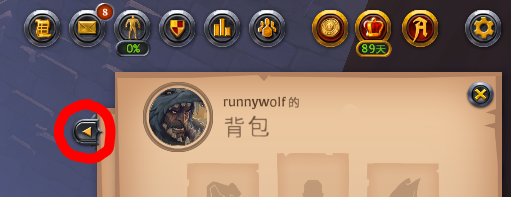
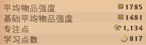
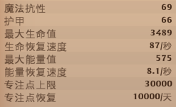
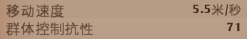
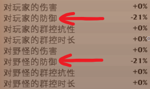
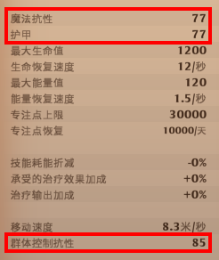

儀錶板與減傷機制
關於背包介面旁的儀錶板，以及儀錶板數值的減傷機制。
顯示儀錶板
先打開背包，按下按鈕即可顯示儀錶板。

物品強度/專注點/學習點數

| 欄位 | 數值效果 |
| 平均物品強度(ip) | 身上 6 格裝備的ip取平均。(雙手武器會以兩格計算) |
| 基礎平均物品強度 | 計算方法同上，但會忽略掉天賦羅盤的ip加成。物品強度 |
| 專注點 | 可用於農牧業或是製造物品時增加材料返還量。 |
| 學習點數 | 裝備/採集/製造的等級的聲望進度到達 20% 時，可以直接消耗學習點數升級。 |
普攻/技能加成

| 欄位 | 數值效果 |
| 物理傷害 | 普通攻擊的傷害。 |
| 物理技能加成 | 使用技能時會額外造成 n% 的物理傷害。 |
| 法術技能加成 | 使用技能時會額外造成 n% 的魔法傷害。 |
傷害抗性/生命值/能量值/專注點

| 欄位 | 數值效果 |
| 魔法抗性 | 能夠減少 n% 的魔法傷害。 |
| 護甲 | 能夠減少 n% 的物理傷害。 |
| 生命回復速度 | 未處於戰鬥狀態時才會回復生命值。 |
| 專注點回復 | 擁有尊享會員時，每天回復 10000 點。(8.64 秒回復 1 點) |
耗能折減/治療加成
| 欄位 | 數值效果 |
| 技能耗能折減 | 施放技能所需的能量減少n%。 例：若技能耗能折減為-18%，則施放技能所需的能量為原先的1.18倍。 |
| 承受的治療效果加成 | 被治療時會額外獲得 n% 的治療量。 |
| 治療輸出加成 | 使用技能時會額外增加 n% 的治療量。 |
移動速度/群控抗性

| 欄位 | 數值效果 |
| 群體控制抗性 | 被群控時，能夠減少 n% 的群體控制時間。 |
群體控制效果(CC, Crowd Control)指的是沉默、定身、緩速等等，
有標籤的黃字技能效果。
有標籤的黃字技能效果。
施放時間/普攻/技能冷卻
| 欄位 | 數值效果 |
| 施放時間修正係數 | 減少 n% 的技能施放時間。 |
| 攻擊速度 | 普通攻擊的速度。 |
| 每秒傷害 | 普通攻擊的每秒傷害。 |
| 冷卻修正係數 | 減少 n% 的技能冷卻時間。 |
防禦

防禦值減傷效果計算：
對...的防禦
%，受到的傷害為原本的 1 倍。
數值實際影響
在儀錶板上我們看到的這三項數據，數值顯示的是能夠減少 n% 的傷害或群體控制時間。

例：
計算實際影響：
如果裝備的魔法抗性點數總和為0，在面對敵人的魔法傷害時，只會受到 100% 的傷害。
降低敵人的傷害抗性，增加我方的傷害：
敵人原本有
點傷害抗性，降低了
點，
造成的傷害為原本的 1 倍。
例：如果敵人的傷害抗性為150，丟他T8毒藥降低了 35 點傷害抗性，造成的傷害為原本的 1.162 倍。
目前發現減抗性機制有問題，解決中，此計算器僅供參考。
編輯紀錄
作者: runnywolf
最後編輯日期: 2022/11/04